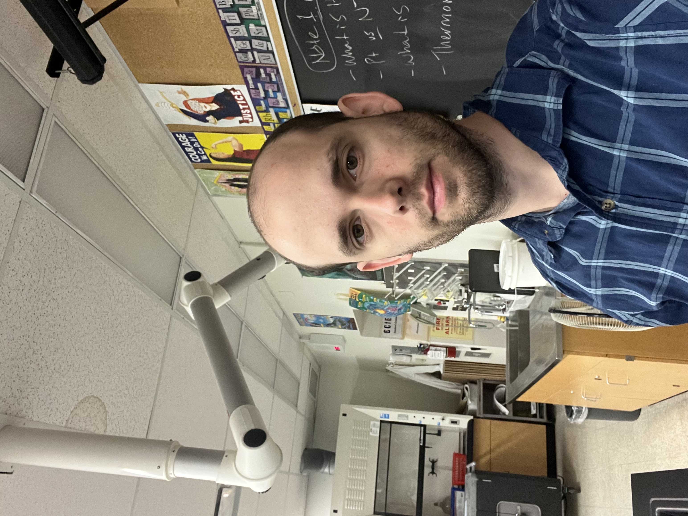

What is Electrical Engineering?
Electrical engineering focuses on the design, development, and maintenance of electrical systems. The systems encompass a wide range of applications, spanning various industries such as healthcare, power generation plants, and mobile devices.
The discipline places a strong emphasis on the principles of physics and circuitry. As an electrical engineer, you delve into the fundamental laws and theories of physics to understand how electricity behaves and interacts with different materials.
While the profession and program may differ, we have sought the perspective of Adrian Vivar Rodriquez who pursued Electrical engineering during his post-secondary education.
Engineer Feature
My name is Adrian Vivar Rodriguez, and I am currently working as a secondary school Math/Physics Teacher with the Toronto Catholic District School Board. I completed my bachelor's degree in electrical engineering (B.Eng) at Toronto Metropolitan University (formerly Ryerson University) and a bachelor in education (B.Ed) at York University. I have also received my Ontario Teaching Certification (OCT). Outside of my work, I enjoy watching and following a variety of sports: soccer, basketball and baseball. My life at home is quite busy as a new father and also having to deal with a beautiful dog (mixed breed of shih tzu and Yorkie), whom I consider to be another child.
How did you know that you wanted to pursue Electrical Engineering?
Since I was in high school, I always knew I wanted to pursue electrical engineering. Mainly due to my stepdad/dad being an electrical/mechanical engineer. So, it was a passion that was instilled in me since I was a kid. I also found great joy in understanding math and the application of it in the fields of physics (specifically in the electrical and magnetic fields).
High School Reflection
As a high school student, I was always academically strong, especially in the subject areas of Math and Science. I did however struggle a bit with English (grade 11 and 12 academic) because I had emigrated to Canada when I was 16 years old. So, understanding the language (listening to my teachers) was a big obstacle at first. However, I was very good at reading it and at first, I did most of my learning by reading textbooks.
I finished my high school career with an average of around 90% and was an honour roll student throughout. Outside of the classroom, I took part in sports I enjoyed such as soccer and baseball.
Pursuing Electrical Engineering in University
My first year in the electrical engineering program was very foundational and it felt like an extension to high school. Courses like calculus, physics, chemistry and introductory electrical courses that offered you a review of things you saw in high school but going a little more into detail with new concepts as well. 2nd year was an extension to these foundational courses, but introduced new and abstract concepts. It was not until 3rd and 4th year, when I got to experience courses that were more interesting and resonated more with me.
The electrical Engineering program offers two pathways: Micro-electronics and Power- electronics. My specialist was in Power Electronics, and it was mainly due to the fact that microelectronics is more connected to computer programming and that is something that I do not enjoy. Nevertheless, power electronics is not fully isolated from digital interfaces as computer programming is everywhere. I learned how to properly design circuits that could handle high voltage, current and power.
Courses on EVs (Electric Vehicles), renewable sources of energy (understanding how solar panels, wind turbines work and how to synchronize them to power grids) taught me a great deal and are the most memorable.
How difficult was the program?
No need to lie about this. The program is difficult, but it becomes easier as you get closer to 4th year. This is true only if you enjoy what you are doing, because courses resonate more with you as you get to learn more industry applicable concepts. At least for my specialist, Power Electronics.
Nevertheless, as you move through the years, you will always encounter courses that might never teach you anything useful (I can think of an electromagnetism course where you learned about Maxwell's equations and another one on Discrete Mathematics). But it is part of the process, and my advice is to never quit even though you may feel like it, because better things will come. For example, my thesis was to design a battery charger for an electric vehicle and it was a blast.
Advice For Students Wanting to Pursue Electrical Engineering
Stressing about grades was also part of the journey as certain internships require you to have a certain GPA, and I recommend you take one if your program offers you. Though you should not forget that, learning is more important than getting a good grade. When you graduate, employers might be more interested in what you know rather than what your GPA reads.
If you are planning to take the program, my advice comes down to whether you enjoy physics and circuit analysis. If you do not, stay away from it. Because the academic challenges you will face might not be worth it.
Career
During my 3rd year, I got a job as a teacher in a private school. And from that moment on, I realized I enjoyed teaching physics and Math more than working in applying them. However, it does not stop me from trying to work in the industry down the road.
One of the great things about engineering is that it offers you the ability to branch into a career of academics or working in the industry. The foundational knowledge that I was able to build during the program definitely gave me confidence to do what I do today, because I can teach students about theoretical concepts in physics and math and then show them where they could be applied.
What are some of your daily tasks?
Daily, I plan lessons in the subject areas of physics and math. I do have to follow academic expectations set out by the provincial government. However, while I am doing this, I am also looking to add applications and make those career connections for students to start finding their path.